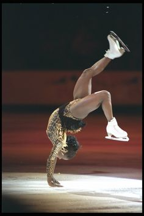

Surya Bonaly: Figure skater
Paving the way

Surya's 1998 Olympic illegal back flip, still remains illegal.
- Landed a backflip on one blade, 1998 Winter Olympics in Nagano, Japan.
- Surya Bonaly is a three-time silver medalist between 1993 to 1995
- She is a five-time European champion between 1991-1995
- World Junior champion, 1991
- Surya is a nine-time French national champion between 1989 to 1997